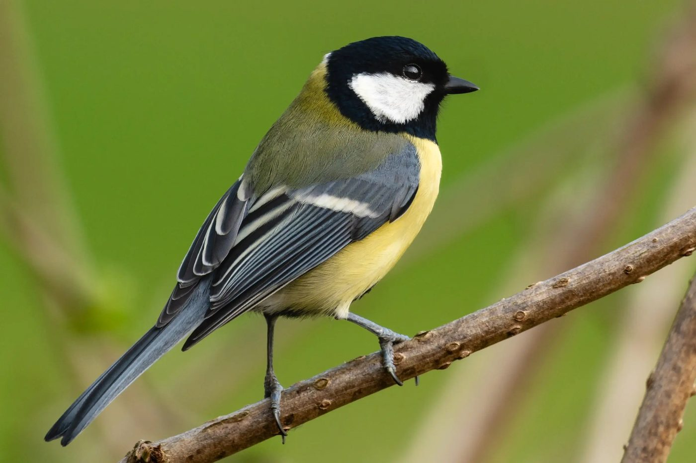
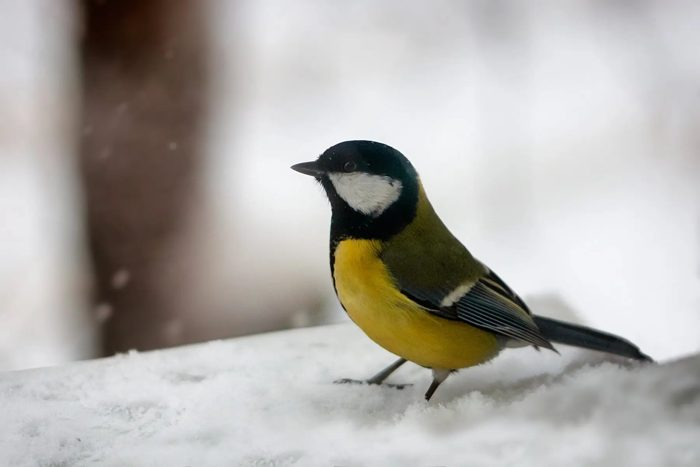
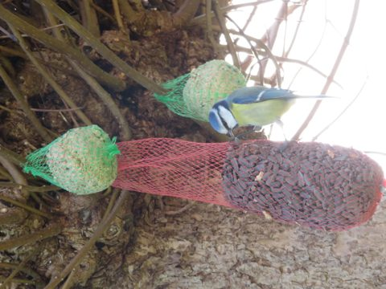
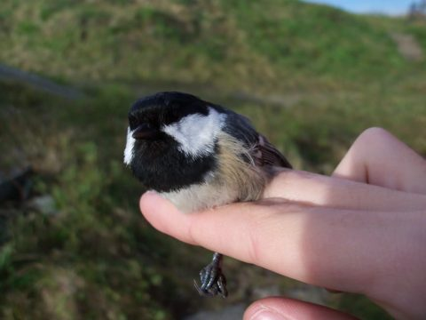
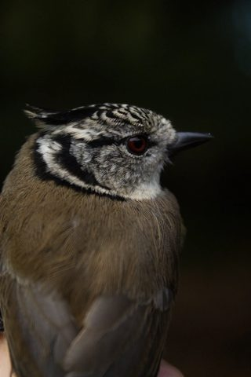
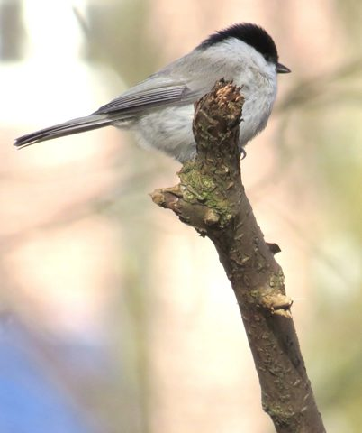

Planschen
En spalt, lugn, som bloggen
Samma innehåll i alla tre: talgoxen med ny webbtext (exempel jag skrivit), dess riktiga foton, fakta, din marginalanteckning ur artfilen, knapp till appen och fler arter i familjen. På mobil blir alla tre en enda spalt. Skillnaden syns på dator.

Den största av våra mesar och en av fåglarna du oftast ser vid fågelbordet. Den finns i hela Sverige året runt.
Ett ringande ti ta, ti ta som hörs redan i februari. Talgoxen har ovanligt många läten, så ett okänt läte i trädgården är ofta just en talgoxe.
Stannfågel i hela landet. Vanligast i lövskog, parker och trädgårdar. På vintern söker den sig till fågelmatningar och på våren flyttar den gärna in i en holk.

Osäker på vad du ser?Birdy känner igen talgoxen på foto eller läte, direkt i telefonen och utan täckning.
▶ Google Play



A: lugnast och mest likt bloggen. Allt läses uppifrån och ned. Marginalanteckningen hamnar i marginalen på dator och under listan på mobil.
Osäker på vad du ser?Birdy känner igen talgoxen på foto eller läte, utan täckning.
▶ Google PlayDen största av våra mesar och en av fåglarna du oftast ser vid fågelbordet. Den finns i hela Sverige året runt.
Ett ringande ti ta, ti ta som hörs redan i februari. Talgoxen har ovanligt många läten, så ett okänt läte i trädgården är ofta just en talgoxe.
Stannfågel i hela landet. Vanligast i lövskog, parker och trädgårdar. På vintern söker den sig till fågelmatningar och på våren flyttar den gärna in i en holk.
B: mest "fältbok". Fotot, fakta och knappen följer med när man scrollar på dator. På mobil hamnar fotot och fakta först, sedan texten.
Den största av våra mesar och en av fåglarna du oftast ser vid fågelbordet. Den finns i hela Sverige året runt.
Ett ringande ti ta, ti ta som hörs redan i februari. Talgoxen har ovanligt många läten, så ett okänt läte i trädgården är ofta just en talgoxe.
Stannfågel i hela landet. Vanligast i lövskog, parker och trädgårdar. På vintern söker den sig till fågelmatningar och på våren flyttar den gärna in i en holk.
C: mest dramatisk och mest lik startsidan. Titel och foto syns direkt i första vyn. Tyngre, och alla 360 sidor får samma kraftiga topp.